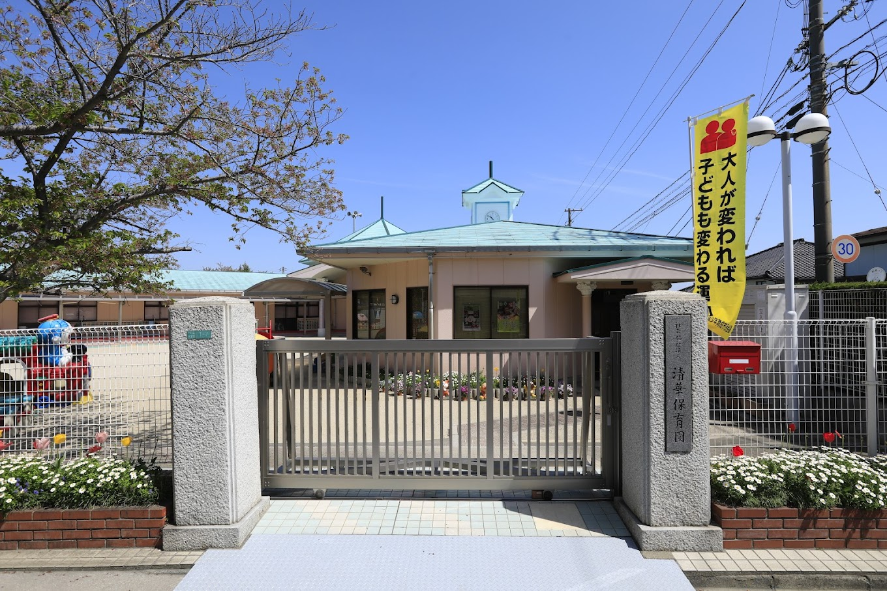

その子の歩幅で。
子どもの思いや育ちのペースを大切にしながら、安心して過ごせる環境を整えています。
 社会福祉法人 清光会清華保育園
社会福祉法人 清光会清華保育園
山口県岩国市由宇町の保育園
小さな「やってみたい」も、
今日のうれしい気持ちも。
その子らしい育ちを、いっしょに。
お子さまと一緒のご見学も歓迎しています。

清華保育園 — みなさまをお迎えする園舎NEWS
OUR HEART
清華保育園が大切にしている、３つのこと。
子どもの思いや育ちのペースを大切にしながら、安心して過ごせる環境を整えています。
菜園活動やクッキング、戸外での活動などを通して、五感を使った豊かな体験を大切にしています。
子ども、保護者、職員、地域とのつながりを大切にし、笑顔あふれる園づくりを目指しています。
入園までの４つのステップ
平日に随時受け付けています。園の行事等によりご案内できない時間帯もありますので、事前にお電話でご予約ください。お子さまと一緒にお越しいただけます。
入園後はお子さまの様子に合わせて、ご家庭と相談しながら少しずつ進めていきます。
WITH OUR NEIGHBORS
地域のみなさまのご参加をお待ちしています。
10〜12月の園庭開放予定です。ご参加を希望される方は、前日までにお電話でご連絡ください。
| 日付 | 内容 | 時間 |
|---|---|---|
| 10月2日（金） | リトミックで遊ぼう | 9:50〜10:15 |
| 10月22日（木） | ハロウィーンのキャンディバッグを作ろう | 10:00〜10:45 |
| 11月6日（金） | リトミックで遊ぼう | 9:50〜10:15 |
| 11月26日（木） | ペットボトル楽器を作ろう・リズム遊び | 10:00〜10:45 |
| 12月4日（金） | リトミックで遊ぼう | 9:50〜10:15 |
| 12月23日（水） | クリスマスの飾りを作ろう | 10:00〜10:45 |
ウイルスや感染症の流行状況により、中止となる場合があります。また、参加人数に限りがありますので、参加をご希望の方は前日までに清華保育園（0827-63-1222）へご連絡ください。
LET’S MEET